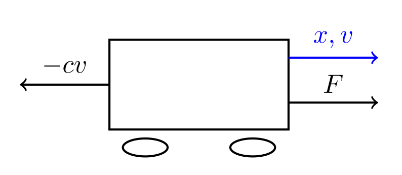
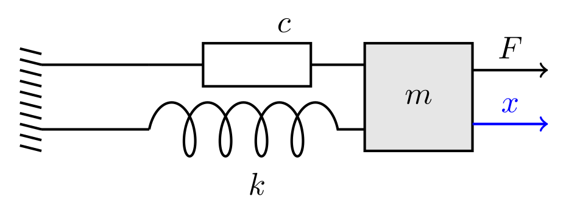
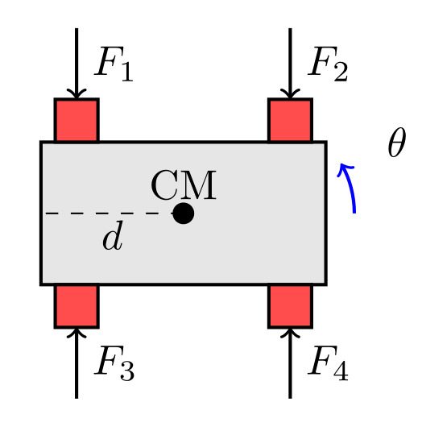
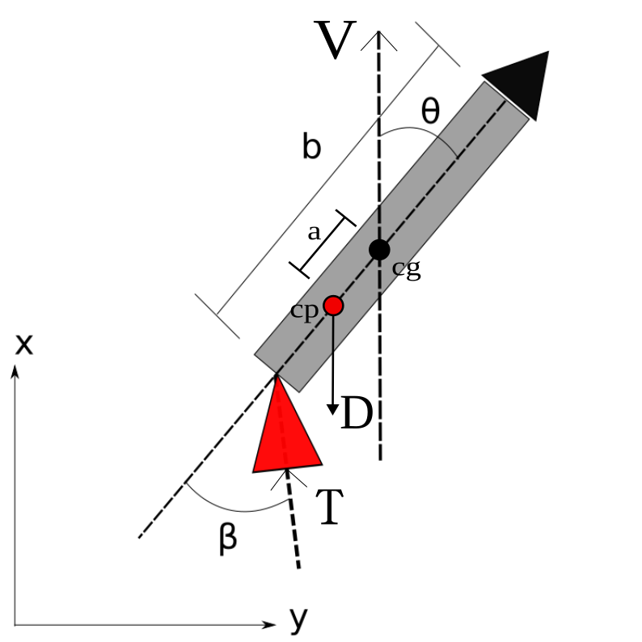
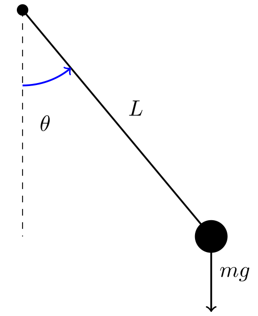

Section 11.3 Equation of Motion Formulation for Practical Systems
The sections below will discuss practical examples of first and second order systems. Many of these examples are classic examples found in many dynamics and controls textbooks and ones that I typically teach budding control systems aerospace/mechanical engineers. Each one offers a slightly different set of dynamics and challenges that will help the undergraduate controls engineer understand the concepts of linear systems as well as how to control them and also determine stability.
Subsection 11.3.1 Position and Velocity of a Car
Consider a car moving in one dimension. The primary forces acting on the car are the driving force from the tires, \(F\text{,}\) and a linear viscous drag force, \(D = -cv\text{,}\) where \(c\) is the viscous drag coefficient, \(x\) is the position of the car and \(v\) is the velocity of the car.

Applying Newton’s second law, the sum of forces is equal to mass times acceleration:
\begin{equation}
m\dot{v} = F - cv\tag{11.3.1}
\end{equation}
where \(m\) is the mass of the car, \(F\) is the force generated by the tires, and \(-cv\) is the linear drag. In this case to make the system first order we simply leave acceleration as \(\dot{v}\) instead of \(\ddot{x}\) where \(x\) would be the position of the vehicle. Rearranging, we obtain the standard first-order linear differential equation:
\begin{equation}
\dot{v} + \frac{c}{m}v = \frac{F}{m}\tag{11.3.2}
\end{equation}
This equation describes the velocity dynamics of the car under a linear drag assumption. In this case \(\sigma = c/m\) and \(F = cf\text{.}\) With these substitutions you arrive at the same equation as (11.2.1). Note that if \(v\) is replaced with \(\dot{x}\) and \(\dot{v}\) is replaced with \(\ddot{x}\) the equation describes the position of car and is second order as shown below.
\begin{equation}
\ddot{x} + \frac{c}{m}\dot{x} = \frac{F}{m}\tag{11.3.3}
\end{equation}
This is another general second order system where the natural frequency \({\omega_n}^2=0\text{.}\) Using the same substitions as above the general formulation is
\begin{equation}
\ddot{q} + \sigma \dot{q} = \sigma f\tag{11.3.4}
\end{equation}
where \(x\) is replaced by \(q\text{.}\) The result is similar to the first order system but still slightly different given the absence of the constant term. It will be shown later that this system is marginally stable and that the difference between the first and second order transfer function is simply a factor of \(s\) given the difference from velocity to position.
Subsection 11.3.2 Position of a Mass Spring Damper
A mass-spring-damper system is a classic example of a second-order system. The system consists of a mass \(m\) attached to a spring with spring constant \(k\) and a damper with damping coefficient \(c\text{.}\) The mass is free to move along a single axis \(x\text{,}\) and the system is subject to an external force \(f\) as shown in Figure Figure 11.3.2.

Consider the mass-spring-damper system depicted above. The spring exerts a restoring force \(-kx\) that is always directed opposite to the displacement \(x\) of the mass from equilibrium, while the damper exerts a resistive force \(-c\dot{x}\) proportional and opposite to the velocity \(\dot{x}\text{.}\) The external force \(F(t)\) acts in the direction of motion. According to Newton’s second law, the sum of these forces acting on the mass equals the mass times its acceleration, leading to the equation
\begin{equation}
m\ddot{x} = F - c\dot{x} - kx \tag{11.3.5}
\end{equation}
Rearranging terms, we obtain the standard form of the equation of motion for the mass-spring-damper system.
\begin{equation}
\ddot{x} + \frac{c}{m}\dot{x} + \frac{k}{m}x = \frac{F}{m}\tag{11.3.6}
\end{equation}
This second-order linear differential equation fully describes the dynamic response of the system to any external force \(F\text{.}\) Looking at equation (11.2.2) we can see that \(\omega_n = \sqrt{k/m}\) and \(\zeta = c/(2\sqrt{mk})\text{.}\) Furthermore, if we let \(F = kf\) we arrive at the same equation as (11.2.2).
Subsection 11.3.3 Attitude Dynamics of a Satellite or Quadcopter
For a satellite undergoing free 1-D rotational motion the dynamics are quite interesting from a controls perspective given the somewhat marginal stability of the satellite. The same can be said for a quadcopter undergoing slow rotational motion. In this case, it is assumed that the spacecraft or quadcopter rotates through the angle \(\theta\) about its center of mass. The spacecraft/quadcopter has a moment of inertia \(J\) and is subject to an external torque \(\tau\) as shown in Figure Figure 11.3.3. In this case ,the torque is created by reaction control thrusters or propellors with a force \(F\) at a distance \(d\) from the center of mass. Note that in the case of the satellite there are 4 thrusters but only 2 operate at a time. If the top right and bottom left thrusters fire the torque is negative and if the top left and bottom right thrusters fire the torque is positive. In this case we let \(F_1=F_2=F_3=F_4=F\text{.}\) If \(F>0\) it means it is a positive torque and \(F_1=F_4\) are non-zero while \(F_2=F_3=0\text{.}\) If \(F<0\) the torque is negative and \(F_1=F_4=0\) while \(F_2=F_3\) are non-zero. For a quadcopter the 4 propellors are offset by a nominal thrust to keep the quadcopter aloft. Furthermore, since the quadcopter is symmetric about the rotational axis it can be assumed that the quadcopter only has 2 propellors \(F_3\) and \(F_4\text{.}\) The torque is created by increasing the thrust on one side and decreasing it on the other side. In this case \(F_3=F_H+\Delta F\text{,}\) \(F_4=F_H-\Delta F\) where \(F_H\) is the thrust required for hovering. Adding the effect of \(F_3\) and \(F_4\) yields \(2\Delta F\) which can just be replaced with \(2F\) and the formulation can continue.

The equation of motion for the satellite can be derived from Newton’s second law for rotational motion, which states that the sum of torques acting on a body equals the moment of inertia times its angular acceleration as derived in Section 4.2. The full equation is repeated here for clarity.
\begin{equation}
\vec{M}_C = \dot{{\bf I}}\vec{\omega}_{B/I} + {\bf I}_C\frac{{}^Bd (\vec{\omega}_{B/I})}{dt} + {\bf S}(\vec{\omega}_{B/I}){\bf I}_C\vec{\omega}_{B/I}\tag{11.3.7}
\end{equation}
In this section however the inertia is constant, thus the entire first term goes to zero, and since the motion of the satellite is planar the third term is also zero. Thus, the equation reduces to
\begin{equation}
\vec{M}_C = {\bf I}_C\frac{{}^Bd (\vec{\omega}_{B/I})}{dt} = J \vec{\alpha}_{B/I} = J\ddot{\theta}\tag{11.3.8}
\end{equation}
where \(\vec{\alpha}_{B/I}\) is the angular acceleration of the satellite. The torque generated by the thrusters is given as \(\vec{M}_C = \tau = 2Fd\text{.}\) The multiplication by 2 is due to 2 thrusters firing at a time or in the case of the quadcopter it is due to the symmetry of the rotation axis as explained above. The final equations of motion for the satellite/quadcopter are then given as
\begin{equation}
\ddot{\theta} = \frac{2Fd}{J}\tag{11.3.9}
\end{equation}
This is a classic second order system where \(\omega_n = 0\) and \(\zeta = 0\text{.}\) This means that the system is marginally stable and will not return to equilibrium after a disturbance. Stability will be discussed in Chapter 14. Letting \(F=f\frac{J}{2d}\) results in \(\ddot{\theta}=f\) which is almost the same equation as equation (11.2.2) but where the natural frequency and damping ratio are both zero.
Subsection 11.3.4 Pitch Dynamics of an Aircraft
For an aircraft we assume that the aircraft is symmetric about the longitudinal axis and that the aircraft is only pitching about its center of mass. The pitch dynamics of an aircraft are similar to a spring mass damper since there is a constant restoring moment given by \(C_{m\alpha}\) due to the aerodynamic forces acting on the aircraft as well as a damping term \(C_{mq}\) also created by aerodynamic forces. Using the aerodynamic equations given in Equation (8.4.7), the pitch dynamics of an aircraft are given as
\begin{equation}
I_{yy}\ddot{\theta} = \vec{M_C} = \frac{1}{2}\rho V^2 S \bar{c} (C_{m\alpha}\theta + C_{mq}\frac{\bar{c}}{2V}\dot{\theta} + C_{m\delta_e}\delta_e)\tag{11.3.10}
\end{equation}
Note that in this case we assume that \(\theta=\alpha\) the angle of attack which is not necessarily true but for quick motion about the pitch axis this can be assumed to be true. Again the moment of inertia is \(I_{yy}\) and the pitch angle is \(\theta\text{.}\) The aerodynamic force is given by the dynamic pressure \(q = (1/2)\rho V^2\) where \(\rho\) is the density of air, \(V\) is the velocity of the aircraft (assumed to be constant for pure pitching), \(S\) is the reference area and \(\bar{c}\) is the mean aerodynamic chord. The moment coefficients are \(C_{m\alpha}\) which is the restoring moment coefficient, \(C_{mq}\) which is the damping moment coefficient and \(C_{m\delta_e}\) which is the control moment coefficient due to elevator deflection \(\delta_e\text{.}\) Rearranging the equation into standard form yields
\begin{equation}
\ddot{\theta} + \left(-\frac{\rho V^2 S \bar{c}^2 C_{mq}}{4I_{yy} V}\right)\dot{\theta} + \left(-\frac{\rho V^2 S \bar{c} C_{m\alpha}}{2I_{yy}}\right)\theta = \frac{\rho V^2 S \bar{c} C_{m\delta_e}}{2I_{yy}}\delta_e\tag{11.3.11}
\end{equation}
which is in the standard form of second order systems with a natural frequency and damping ratio given as
\begin{equation}
{\omega_n}^2 = -\frac{\rho V^2 S \bar{c} C_{m\alpha}}{2I_{yy}}, \quad \zeta = -\frac{\rho V^2 S \bar{c}^2 C_{mq}}{8I_{yy} V {\omega_n}}\tag{11.3.12}
\end{equation}
Note that \(C_{m\alpha}\) and \(C_{mq}\) are typically negative which makes both \(\omega_n\) and \(\zeta\) positive. However, in the case of the F-16 \(C_{m\alpha}\) is actually negative. In this case the natural frequency squared becomes negative and the solution quite different. In The control term is the elevator deflection \(\delta_e\) which means performing the final substitution below
\begin{equation}
\delta_e = f \frac{C_{m\alpha}}{C_{m\delta_e}}\tag{11.3.13}
\end{equation}
results in the same equation as equation (11.2.2) provided you subsitute \(\theta\) with the generalized q coordinate.
Subsection 11.3.5 Pitch Dynamics of a Rocket
The pitch dynamic of a rocket are interesting in that the system is also marginally stable much like the satellite/quadcopter systems explained above. The difference of course is that the system is in the presence of the atmosphere and thus the aerodynamic forces create a damping effect which is proportional to the square of the velocity. This damping term is also nonlinear. However, in order to make the system linear it is assumed that the velocity is constant. For the sake of clarity the full equations of motion will be shown and then simplified to attain a simple linear form. First, the free body diagram of the rocket is shown in the Figure below.

Here thrust acts at an angle \(\beta\) with respect to the centerline of the rocket with a thrust equal to \(T\text{.}\) The length of the rocket is \(b\) and thus the moment arm of the thrust vector is \(b/2\text{.}\) The aerodynamic force \(D\) acts at the center of pressure which is a distance \(c\) from the center of mass. It is assumed that the rocket is constantly traveling upwards and thus the Drag force \(D\) is always pointed down at a distance of \(a\) from the center of mass. The moment of inertia of the rocket is \(J\) and the pitch angle is \(\theta\text{.}\) The equations of motion are similar to the quadcopter/satellite system undergoing 1-D rotational motion with a few subtle differences.
\begin{equation}
J\ddot{\theta} = \vec{M_C} = -D a \sin{\theta} + \frac{Tb}{2} \sin(\beta)\tag{11.3.14}
\end{equation}
First you’ll see that the aerodynamic force which is restoring is nonlinear due to the \(\sin{\theta}\) term. Furthermore, the thrust force \(T\) acts through the angle \(\beta\) leading to a problem where the thrust force \(T\) could change in addition to the angle \(\beta\text{.}\) Two control terms would represent a multi-input system which requires the use of optimization to determine the best course of action. Since the focus of this chapter is on Single-Input-Single-Ouput (SISO) systems, the force \(T\) will be represented as a constant. Thus, the control term for this system will actually be the angle \(\beta\text{.}\) However, note that the control term is also nonlinear. Both \(\sin()\) terms can be linearized for small angles such that \(\sin{\theta} \approx \theta\) and \(\sin{\beta} \approx \beta\text{.}\) Note that \(\theta=0\) is the equilibrium position in this case. The equation of motion then becomes
\begin{equation}
J\ddot{\theta} + D a \theta = T \frac{b}{2} \beta\tag{11.3.15}
\end{equation}
Which is linear...almost. The second issue in this equation is that the aerodynamic force is a function of velocity squared. The drag force is given in Equations (8.4.8) and (8.4.9). As stated above it is assumed that the velocity is constant and thus \(D\) is constant as well. The final equation of motion for the rocket pitch dynamics is then given as
\begin{equation}
\ddot{\theta} + \frac{\pi}{J8}\rho V^2 d^2 a \theta = \frac{Tb}{2J} \beta\tag{11.3.16}
\end{equation}
If \((\pi/(J8))\rho V^2 d^2 a = {\omega_n}^2\text{,}\) \(Tb/(2J) \beta = \kappa {\omega_n}^2 f\) and \(\theta = q\text{,}\) the equations of motion are identical to the general form of second order systems except that \(\kappa\) is a gain applied to the forcing function.
\begin{equation}
\ddot{q} + {\omega_n}^2 q = \kappa {\omega_n}^2 f\tag{11.3.17}
\end{equation}
In addition, it is clear that the damping ratio \(\zeta\) is zero.
Subsection 11.3.6 Pitch Dynamics of a Pendulum
The dynamics of a pendulum are interesting for two reasons. First, the system is non-linear in the angle \(\theta\) and the system has an infinite number of equilibrium points. Half of the equilibrium points are also unstable. For the sake of this problem though we will restrict the system to be between \(-\pi\) and \(\pi\) which means the system will only have 3 equilibrium points. The first is \(\theta=0\) and the other two are \(\theta=-\pi\) and \(\theta=\pi\text{.}\) Obviously the second two equilibrium points are the same. To formulate the dynamics we start with the figure below

The pendulum consists of a mass \(m\) attached to a rigid, massless rod of length \(L\text{.}\) The pendulum swings about a pivot point under the influence of gravity, which exerts a downward force \(mg\) on the mass. An external torque \(\tau\) acts at the pivot point itself. The angle \(\theta\) represents the angular displacement of the pendulum from the vertical equilibrium position. The equation of motion for the pendulum can be derived just as before with the sum of torques acting on a body equaling the moment of inertia times its angular acceleration. The moment of inertia \(J\) for a point mass at a distance \(L\) from the pivot is given by \(J = mL^2\text{.}\) The torque generated by the gravitational force is \(\tau_g = -mgL \sin{\theta}\text{,}\) where the negative sign indicates that gravity acts to restore the pendulum to its equilibrium position. Thus, the equation of motion is given as
\begin{equation}
J\ddot{\theta} = \vec{M_C} = -mgL \sin{\theta} + \tau\tag{11.3.18}
\end{equation}
Rearranging and substituting the moment of inertia yields
\begin{equation}
\ddot{\theta} = \frac{\tau}{mL} - \frac{g}{L} \sin{\theta}\tag{11.3.19}
\end{equation}
This equation is close to the second order equations where the damping ratio is zero but it is nonlinear due to the \(\sin{\theta}\) and \(\cos{\theta}\) terms. In this case the system can be linearized about the equilibrium point \(\theta=0\) but can also be linearized about the equilibrium point \(\theta=\pi\) if the pendulum is inverted. In order to linearize the equations of motion you need to use equation (11.1.2). Note that in this case the matrices \(A\) and \(B\) are expanded out instead of using matrix notation.
\begin{equation}
\Delta \ddot{\theta} = \frac{\partial f}{\partial \dot{\theta}} \Delta \dot{\theta} + \frac{\partial f}{\partial \theta}\Delta \theta + \frac{\partial g}{\partial \tau} \Delta \tau \tag{11.3.20}
\end{equation}
where \(f = -(g/L) \sin{\theta}\) and \(g = \tau/(mL)\text{.}\) Calculating the partial derivative and plugging into the equation above yields
\begin{equation}
\Delta \ddot{\theta} = 0 -\frac{g}{L}\cos(\theta_e)\Delta \theta + \frac{1}{mL} \Delta \tau\tag{11.3.21}
\end{equation}
Rearranging and dropping the \(\Delta\) terms yields
\begin{equation}
\ddot{\theta} + \frac{g}{L}\cos(\theta_e)\theta = \frac{1}{mL} \tau\tag{11.3.22}
\end{equation}
This will now yield two separate and quite different equations depending on the equilibrium point chosen. First, if the equilibrium point is \(\theta_e=0\) the equation becomes
\begin{equation}
\ddot{\theta} + \frac{g}{L}\theta = \frac{1}{mL} \tau\tag{11.3.23}
\end{equation}
which is in the standard form of second order systems where \({\omega_n}^2 = g/L\) and \(\zeta = 0\text{.}\) The control term is \(\tau = fmg\) which results in the same equation as (11.2.2). If \(\theta_e=\pi\) the equation becomes
\begin{equation}
\ddot{\theta} - \frac{g}{L}\theta = \frac{1}{mL} \tau\tag{11.3.24}
\end{equation}
which is again in the standard form of second order systems except that the constant term is negative which means the system is actually unstable. More on this system will be discussed in Chapter 14. Furthermore, the solution is also quite different and will be explored in the sections that follow.